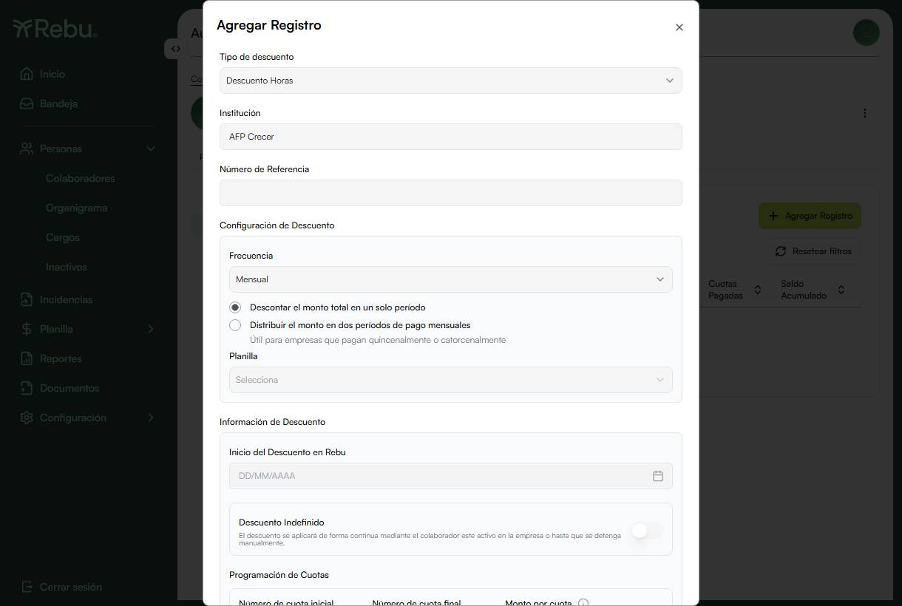

REBU-5009El recálculo de planilla considera cambios en el campo "Planilla Asociada" del colaborador
5 / 5 ✓▼
ID
Caso de prueba
Status
TC-PLA-644
AC1 · Colaborador asociado DESPUÉS de iniciar la planilla aparece al recalcular (2 → 3)
@api-ui@planilla@regulatory
PASS
Precondiciones
Planilla quincenal Q2 julio (16–31) corrida con 2 colaboradores asociados; un 3.º colaborador creado pero SIN asociar.
Setup
1. createAssociationScenario con initial: [$1000, $1000] y spare: [$1000] → crea planilla + política + colaboradores y corre el entry.
Pasos
1. Verificar que el set inicial de la planilla = 2 (el spare no aparece). 2. Asociar el spare (PATCH person { payrollId }). 3. Recalcular por UI (menú ⋮ → "Recalcular Planilla" → modal). 4. Leer el set de colaboradores del detalle.
Resultado esperado
El colaborador recién asociado aparece; el total pasa de 2 a 3.
Resultado obtenido
Set final = 3 (incluye al recién asociado); indicador de total en Remuneraciones = 3. ✅
REBU-5140La distribución de descuentos cíclicos deja de depender de la planilla del colaborador
4 / 7 ✓▼
⚠️ 2 hallazgos abiertos en esta HU. Los rojos de TC-PLA-646 y TC-PLA-647 no son fallas de la automatización: son defectos del motor de cálculo, reproducibles y ya levantados como
REBU-5272 y
REBU-5273.
TC-PLA-652 es un rojo esperado: reproduce a propósito el bug de FE
REBU-5271 y se pondrá verde cuando se corrija.
ID
Caso de prueba
Status
TC-PLA-642
REBU-5140
AC7 · Colaborador SIN planilla asociada: el cíclico "Distribuir" se guarda y aplica $50 al asociarle una quincenal
@api@planilla@regulatory
PASS
Precondiciones
Colaborador activo $1,000 sin Planilla Asociada; planilla quincenal creada sin iniciar; concepto "Descuento Horas" disponible.
Setup
1. createCyclicDistributionScenario con initialFrequency: null y alternateFrequency: 'quincenal' → crea la planilla, el colaborador sin asociar y da de alta el cíclico.
Pasos
1. Dar de alta el descuento cíclico de $100, cuotas 1–3, opción "Distribuir el monto en dos períodos" (distributionType: 'Distributed'). 2. Asociar el colaborador a la planilla quincenal (PATCH person { payrollId }). 3. Correr la Quincena 1 de julio. 4. Leer el monto del concepto en el detalle.
Resultado esperado
El alta responde 2xx (no hay rechazo por falta de planilla) y, tras asociar la quincenal, Q1 descuenta $50 (mitad A).
Resultado obtenido
Alta = 200; entry 1021 descontó $50.00. ✅ Confirma que el guard de BE fue retirado (REBU-5177).
Planilla
🧾 entry 1021 · UAT co.2 · período 01/07/2026–15/07/2026
Status
PASS
TC-PLA-643
REBU-5140
AC2 / AC6 · "Distribuir" con planilla mensual: ya no es rechazado y cobra $100 completos
@api@planilla@regulatory
PASS
Precondiciones
Colaborador activo $1,000 asociado a una planilla mensual (paymentPeriodId: 1, "Último día del mes").
Setup
1. createCyclicDistributionScenario con initialFrequency: 'mensual' y cíclico Distributed de $100.
Pasos
1. Dar de alta el cíclico "Distribuir el monto en dos períodos" sobre la planilla mensual. 2. Correr la planilla mensual de julio (01→31). 3. Leer el monto del concepto.
Resultado esperado
El alta responde 2xx (antes devolvía error de validación por el guard DistributedNotAllowedForMonthlyPayroll) y la corrida mensual descuenta $100 (partición FULL, regla 2), no $50.
Resultado obtenido
Alta = 200; entry 1035 descontó $100.00. ✅
Planilla
🧾 entry 1035 · UAT co.2 · período 01/07/2026–31/07/2026
Status
PASS
TC-PLA-644
REBU-5140
AC5 / regla 4 · Single en "Período 2" con planilla mensual se redirige a Período 1 y cobra $100
@api@planilla@edge-case
PASS
Precondiciones
Colaborador activo $1,000 asociado a planilla mensual.
Setup
1. createCyclicDistributionScenario con initialFrequency: 'mensual', distributionType: 'Single' y singlePeriodPreference: 2.
Pasos
1. Dar de alta el cíclico con "Descontar el monto total en un solo período" + "Período 2 (si aplica)". 2. Correr la planilla mensual. 3. Leer el monto del concepto.
Resultado esperado
El descuento se ejecuta en la única corrida mensual (redirigido a Período 1) por $100. El riesgo del escenario es que no se ejecute nunca, al no existir un Período 2 en mensual.
🧾 entry 1036 · UAT co.2 · período 01/07/2026–31/07/2026
Status
PASS
TC-PLA-645
REBU-5140
Regresión · "Distribuir" en quincenal sigue dando $50 en Q1 y $50 en Q2
@api@planilla@regression
PASS
Precondiciones
Colaborador activo $1,000 asociado a una planilla quincenal.
Setup
1. createCyclicDistributionScenario con initialFrequency: 'quincenal' y cíclico Distributed de $100, cuotas 1–3.
Pasos
1. Correr la Quincena 1 de julio (01→15) y leer el monto. 2. Correr la Quincena 2 (16→31) y leer el monto.
Resultado esperado
Q1 descuenta $50 (partición A) y Q2 descuenta $50 (partición B); total del mes = $100, sin duplicar ni omitir cuota.
Resultado obtenido
entry 1037 = $50.00, entry 1038 = $50.00, total $100.00. ✅ El refactor del motor no rompió el camino que ya funcionaba.
Planilla
🧾 entries 1037 y 1038 · UAT co.2 · julio 2026
Status
PASS
TC-PLA-646
REBU-5140
Regla 1 / AC6 · Quincenal → mensual con media cuota abierta: el mes de transición debe cobrar solo los $50 pendientes
@api@planilla@edge-case
FAIL
Precondiciones
Colaborador $1,000 en planilla quincenal con Q1 ya corrida y $50 descontados (partición A cerrada); una planilla mensual disponible para reasociarlo.
Setup
1. createCyclicDistributionScenario con initialFrequency: 'quincenal' y alternateFrequency: 'mensual', cíclico Distributed de $100.
Pasos
1. Correr Q1 julio en la quincenal → abre la cuota con la partición A ($50). 2. Cambiar la Planilla Asociada a la mensual (PATCH person { payrollId }). 3. Correr la planilla mensual del mes de transición. 4. Correr el mes siguiente.
Resultado esperado
El mes de transición descuenta $50 (cierra la partición B pendiente, regla 1 de REBU-5176) — no $100 ni $150. El mes siguiente, sin pendiente, descuenta $100 (FULL, regla 2).
Resultado obtenido
🔴 El mes de transición descontó $100.00 en vez de $50. El motor abre una cuota nueva FULL en lugar de cerrar la partición B, de modo que el colaborador paga $150 por una cuota de $100. Reproducido en dos variantes: con la transición en el mismo julio (entries 1032/1033) y en agosto (entries 1030/1031, 1039/1040) — ambas dan $100.
Defecto
🐞 REBU-5272 · [BUG BE] media cuota abierta no se cierra al cambiar de frecuencia · Prioridad High. Contradice la regla 1 de REBU-5176 pese a sus 5,183 unit tests en verde. ⚠️ Queda por dirimir con producto una ambigüedad: la tabla de escenarios de la HU dice "$100 completo en cada planilla mensual" (estado estacionario) mientras la subtask BE especifica $50 para el mes de transición.
Edge de centavos · "Distribuir" de $100.01 en quincenal debe repartirse sin perder ni inventar centavos
@api@planilla@edge-case
FAIL
Precondiciones
Colaborador $1,000 en planilla quincenal.
Setup
1. Igual que TC-PLA-645, pero el cíclico se da de alta con monthlyAmount: 100.01.
Pasos
1. Correr Quincena 1 y registrar el monto aplicado. 2. Correr Quincena 2 y registrar el monto aplicado. 3. Verificar la suma y la cantidad de decimales de cada período.
Resultado esperado
La suma de ambos períodos es exactamente $100.01 y ningún período muestra más de 2 decimales ni residuo de coma flotante.
Resultado obtenido
🔴 La suma sí cierra en $100.01, pero cada período persiste $50.005 en amount — tres decimales. La UI lo redondea a $50.01, con lo que el usuario ve $50.01 + $50.01 = $100.02: un centavo de descuadre entre lo mostrado y lo almacenado.
Defecto
🐞 REBU-5273 · [BUG BE] el split 50/50 no redondea a centavos · Prioridad Low. Puede resultar vacío de especificación más que defecto: la HU nunca define a qué partición va el centavo residual ni si se redondea al persistir o al pagar.
Planilla
🧾 entries 1041 y 1042 · UAT co.2 · julio 2026
Status
FAIL
TC-PLA-652
REBU-5140
REBU-5271 · El modal de "un solo período" debe mostrar el selector de Período y NO exigir "Planilla"
@ui@planilla@validacion
BUG CONOCIDO
Precondiciones
Colaborador activo $1,000 sin Planilla Asociada; concepto de descuento cíclico disponible.
Setup
1. createCyclicDistributionScenario con initialFrequency: null y sin bloque cyclic — el descuento se da de alta por UI, que es donde vive el bug.
Pasos
1. Abrir el perfil del colaborador › tab Cíclicos › Descuentos cíclicos › "Agregar Registro". 2. Seleccionar el Tipo de descuento (el modal nace con ese único campo; el resto del formulario solo se monta después). 3. Marcar "Descontar el monto total en un solo período". 4. Leer el estado del modal.
Resultado esperado
Aparece el selector "Período 1 / Período 2 (si aplica)"; no hay campo "Planilla" obligatorio; el label de la segunda opción no dice "de pago mensuales"; se muestra la leyenda "Distribución automática…".
Resultado obtenido
🟡 Los cuatro ACs incumplidos, tal como describe el defecto: { muestraCampoPlanilla: true, muestraSelectorPeriodo: false, labelDistribuirConSufijoViejo: true, muestraLeyendaDistribucionAutomatica: false }. El BE ya liberó la restricción (verificado por TC-PLA-642), así que el defecto es de una sola capa.
Defecto
🐞 REBU-5271 · [BUG FE] "Planilla" sigue obligatoria en "un solo período" · Prioridad Highest, bloqueante. El test nace con test.fail(): hoy es rojo esperado y se pondrá verde cuando FE corrija — momento de quitarle el test.fail.
Evidencia
01 — Modal de cíclicos con "un solo período" seleccionado

Se ve el campo "Planilla" desplegado bajo los radios (debería ser el selector de Período), el label viejo "Distribuir el monto en dos periodos de pago mensuales" y la leyenda anterior "Útil para empresas que pagan quincenalmente o catorcenalmente".
Permisos: un usuario sin permiso de recálculo no puede ejecutar "Recalcular Planilla". Fase 2 — requiere infra de roles/ACL y una segunda sesión.
⏭️
TC-PLA-650
UI: el indicador de total de colaboradores en Remuneraciones se actualiza tras recalcular. Fase 2 — assert duro sobre getTotalCount() (hoy verificado por API + evidencia visual).
AC2 · Ambos radios habilitados en el modal de cíclicos con planilla mensual, quincenal, catorcenal y sin planilla. Fase 2 — el modal no expone role="dialog" ni data-testid en los radios; hay que endurecer selectores. Bloqueado además por REBU-5271.
⏭️
TC-PLA-649
AC3-a / AC3-b / AC4 · Selector "Período 1 / Período 2 (si aplica)", label sin "de pago mensuales" y leyenda de distribución automática; sin llamada a GET /people/{id}/payroll-periods (endpoint eliminado). Fase 2 — cubierto parcialmente por TC-PLA-652; requiere el FE desplegado.
⏭️
TC-PLA-650
AC2 espejo en ingresos cíclicos: "Distribuir" con planilla mensual se guarda y aplica completo. Fase 2 — misma lógica de BE que descuentos (mismo handler), falta resolver el catálogo de conceptos de ingreso cíclico por empresa. (ID compartido con REBU-5009 — ver contexto de la HU)
⏭️
TC-PLA-651
AC1 en carga masiva de cíclicos: fila con "Distribuir" + colaborador mensual ya no es rechazada por PeopleCyclicsBulkUploadRowValidator. Fase 2 — requiere construir el .xlsx con la plantilla de cíclicos, distinta a la de REBU-4880.